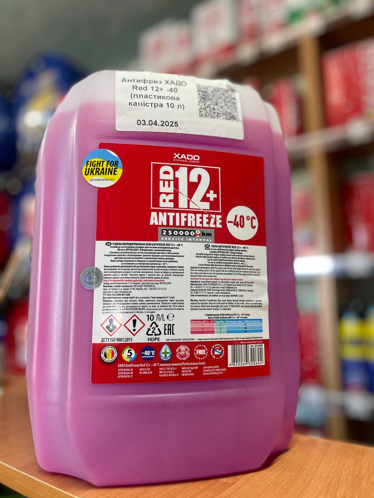

Об’єм: 10 л
Готова рідина для систем охолодження сучасних двигунів. Містить унікальний компонент REVITALIZANT для захисту деталей від зносу.
Цей антифриз створений на основі високоякісного моноетиленгліколю з повністю органічним пакетом інгібіторів. Забезпечує надійний захист від корозії, кавітації та високих температур навіть для алюмінієвих та інших металевих елементів системи охолодження. Підходить для гібридних та електромобілів. Рекомендований термін експлуатації — до 5 років або 250 000 км пробігу.
Відповідає міжнародним стандартам та технічним нормам:
Сумісний з допусками відомих виробників:
Можна використовувати як готову рідину або розбавляти водою для досягнення бажаного рівня морозостійкості.
| Частка антифризу | Частка води | Температура, °С |
|---|---|---|
| 1 | 1 | -15 |
| 2 | 1 | -20 |
| 3 | 1 | -30 |
Якщо ви хочете дізнатись про наявність товару, отримати консультацію або поставити будь-які питання щодо продукції XADO — ми завжди готові допомогти.
Телефон для зв’язку: +38 (050) 585-07-26
Ми допоможемо обрати саме те, що потрібно вашому автомобілю.
Звертайтеся, ми цінуємо кожного клієнта!